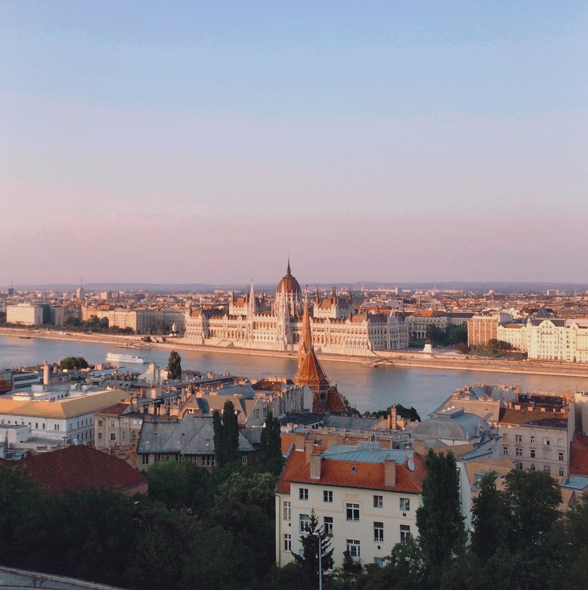

DESTINATIONS ↣ EUROPE
BUDAPEST, HUNGARY
Budapest is one of the few places I've been fortunate enough to travel to twice in my life. I first discovered the beautiful
city in 2015 when I took a family trip there in the summertime. The second time was about 5 years later during my study abroad experience
in the wintertime, which showed me a completely different side of the city. It was as if I was visiting for the first time all over again.
Budapest is famous for its long-standing history, mesmerizing architecture, natural hot springs, and dynamic night-life– all for a cheap price! The locals are
all friendly and welcoming, especially in comparison to those in some other European countries.
3-Day Itinerary in Budapest
I stayed in a hostel–Hive Party Hostel–located on the Pest side of the Danube River, so this sample itinerary is based off where I was personally located!
BTW, recognize the photo above? This shot of the Parliament building from the Buda side was taken during my first trip in 2015 from the exact
same angle as the first photo, which I took in 2020, just 5 years earlier in the opposite season! Just as magical though.
DAY 1
- Breakfast at STIKA (Hungarian food)
- Check out the local vintage stores
- Go shopping down Fashion Street
- Grab a delicious snack at the Donut Library
- Catch the sunset at Gellért Hill
- Dinner at Antré (traditional Hungarian food)
- Dessert at Chez Dodo
- Breakfast at Cirkusz
- See the Parliament Building
- Tour St. Stephen's Basilica
- Take a look at the statues in Heroes' Square
- Spend the rest of your day relaxing at Szechenyi Thermal Baths
- Dinner at Mazel Tov
- Breakfast at New York Café
- Make your way to the Pest side of the Danube
- Tour Matthias Church
- Visit Buda Castle
- Get a stunning view of the city from the Fisherman's Bastion
- Dinner at Kollázs
- Go to a famous ruin bar
- BREAKFAST/BRUNCH:
- ☕ STIKA (sit-down)
- ☕ Cirkusz (sit-down)
- ☕ New York Palace Café (sit-down)
- ☕ Warmcup (quick coffee)
- ☕ The Sweet (café)
- LUNCH/DINNER:
- 🍴 Borbirosag (Hungarian bistro)
- 🍴 Kollázs (European brasserie)
- 🍴 Mazel Tov (Mediterranean ruin bar style restaurant)
- 🍴 Tomi Lángos (Hungarian street food)
- 🍴 TLVeatery (Israeli)
- 🍴 Deep Burger (American)
- DESSERT:
- 🍰 Waffle & Love (fun waffles)
- 🍰 Chez Dodo (macarons)
- 🍰 The Donut Library (donuts)
- 🍰 Gelarto Rosa (gelato)
We tried coming here for brunch, but sadly, it was a long wait and we were hungry! It is highly rated though, so definitely worth it to check out if you're in the area!
There are lots of cool vintage thrift stores scattered around Budapest. Some of the best vintage stores are Retrock in Anker Köz and Szputnyik, which is just a 9 minute walk away. These stores transport you back in time to get a taste of what fashion trends looked like in the past.
One of the best spots to catch the sunrise in Budapest is from the top of Gellért Hill, which overlooks the Danube River, offering a view of both the Buda and Pest sides.
For dinner our first night, we didn't have anything planned so we decided to walk around and choose a restaurant spontaneously. We were in luck, as we stumbled upon Antré, a traditional Hungarian restaurant with a modern twist. I ordered the duck breast and it was delicious!
If you have a sweet tooth like me, you'll definitely want to check out this little macaron shop in the downtown Budapest area (only a 6 minute walk from Antré). The macarons are all handmade right in front of your eyes!
DAY 2
This fun brunch place was right next to our hostel in the Jewish district of Budapest. They serve up delicious specialty coffee and typical brunch food. I ordered eggs benedict with a side of bacon of course. My friends and I also decided to indulge in their bottomless mimosa deal, since we were on vacation after all.
I didn't end up touring the interior of the Parliament building either time I visited Budapest, but the exterior neo-Gothic architecture is one-of-a-kind. The Parliament is pretty much THE number one tourist attraction in Budapest and for good reason.
A short walk away from the Parliament is the 2nd most popular tourist attraction in Budapest– St. Stephen's Basilica. It is the biggest church in Budapest. If weather permits, you should definitely head to the top of the dome, where you'll be enchanted with a view of the city.

This was by far one of my favorite activities from both of my Budapest trips. The city is known for its thermal baths, and Szechenyi is the biggest, most popular one. When I first went in the summertime, the cool, indoor pools were perfect for escaping the unbearable heat outside. When I returned during the complete opposite season, the outdoor hot springs helped us stay warm in the cold weather. Here, you'll find yourself at peak relaxation. Buying your tickets online ahead of time will save you the trouble of waiting in line once you arrive.
I didn't have the chance to stop by Mazel Tov, but it was highly recommended by many. Located in the Jewish quarter, Mazel Tov is an open food hall serving Hungarian Israeli cuisine. It is decorated with plants all around so that the space doubles as a restaurant and garden.
DAY 3
Dubbed "the most beautiful café in the world," New York Café is definitely a stop you'll want to make. The restaurant is decorated with gold trimmings, elaborate paintings across the ceiling, and magnificent detailing on the walls. The menu has breakfast, lunch, and dinner options, but the selection of pastries and desserts was the most impressive. This is by far the best place to enjoy a cup of coffee and pastry while feeling like royalty.
The fastest and easiest way to get across the Danube is by subway. It is also nice to walk across the Chain bridge and admire the intricate iron details of the structure.
Both the first and second images on this page were taken from one of the Fisherman's Bastion towers. If you go at sunset, you can catch a brilliant sun setting across the Danube river, illuminating the Pest side with red and pink colors.
This was hands down the best dinner I had in Budapest, so I had to save it for last. My family loved our meal so much that we went back a second time during our 3 day stay in Budapest. Everything from the food, to the drinks, to the dessert was absolutely delicious and super well-presented. Our favorites were the tuna niçoise salad (salad with seared tuna, quail eggs, potatoes, red onion, and cherry tomatoes) and the Hungarian sponge cake (sponge cake, rum, chocolate).
You can't make a trip to Budapest without spending a night at one of the famous ruin bars in the area. These bars were built from the ruins of abandoned buildings and transformed into eclectic spaces perfect for drinking, dancing, and overall good vibes. Each ruin bar has its own unique personality, but my favorite (where my friends and I went 3 nights in a row) was definitely Instant. It is the largest ruin bar with over 20 rooms, each with a different theme. It definitely has more of nightclub feel, so if that's not what you're looking for, these are a few other popular ruin bars: Szimpla Kert, Fogasház, and Anker’t.
Eat & Drink Your Way Through Budapest!
The food in Budapest ended up exceeding my expectations mostly because I didn't really have much of an idea as to what Hungarian cuisine really consisted of. Below, I've shared some of the places either I ate at or intended to eat at (after much research, so I'm confident they'd be good). But, I do wish that I had tried more traditional Hungarian foods like goulash (a hearty stew– the national dish of Hungary), lángos (similar to fried dough), and Paprikás Csirke (Chicken Paprikash).
Travel With Me!

Hi, I'm Michelle– a 22 year old college student, adventure seeker, and food enthusiast! This blog began as a class project, and after having so much fun with sharing my travel experiences and advice, I decided to keep it up, documenting my travels as I go.